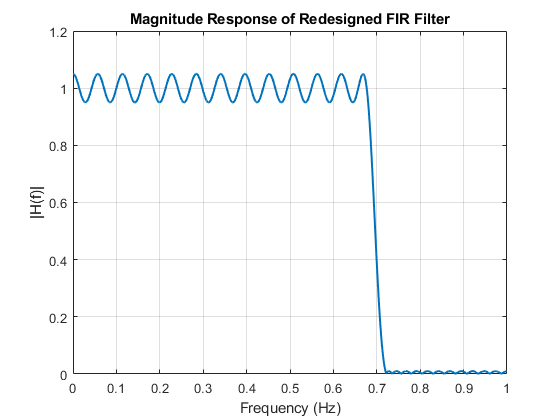
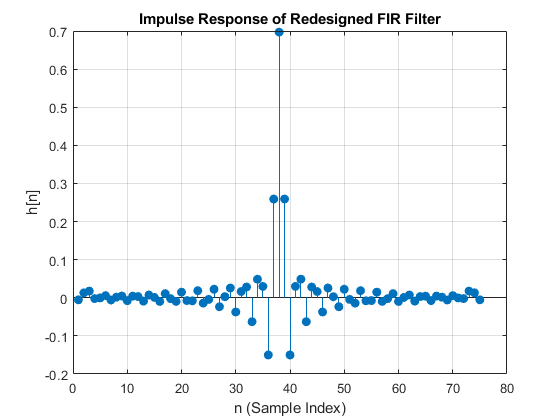
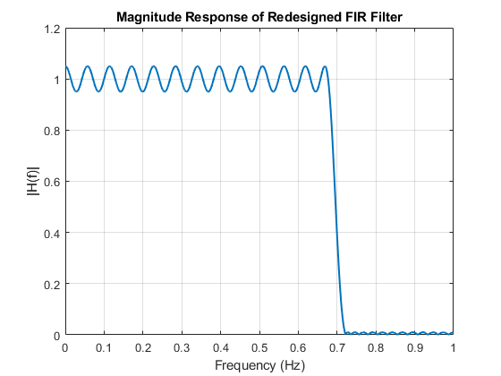
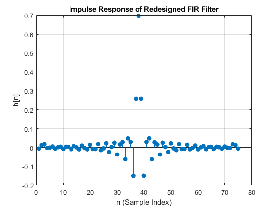
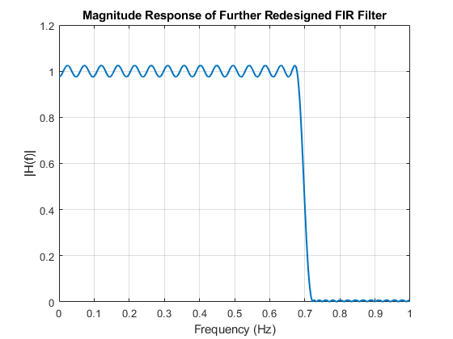
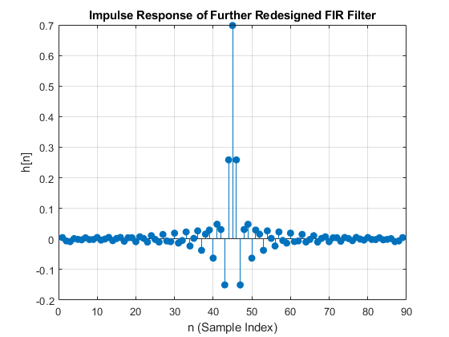
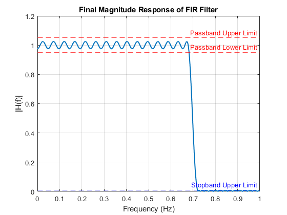
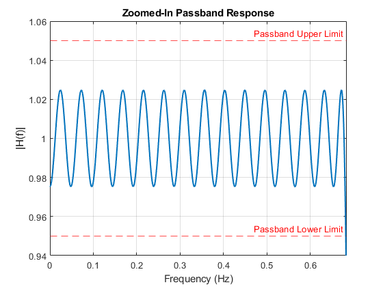
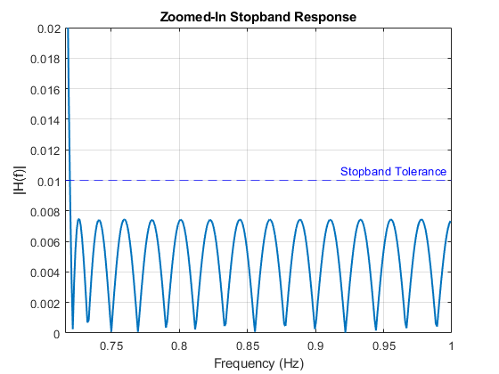
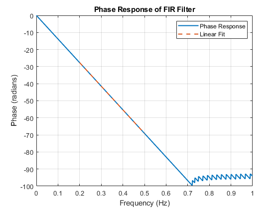

Contents
% FIR Filter Design via Optimization % Given Specifications omega_p = 0.68 * pi; % Passband edge (normalized frequency) omega_s = 0.72 * pi; % Stopband edge (normalized frequency) delta_p = 0.05; % Passband ripple delta_s = 0.01; % Stopband ripple fs = 2; % Sampling frequency (normalized to Nyquist)
(a): Estimate Filter Order
f_p = omega_p / (2 * pi) * fs; % Passband edge in Hz f_s = omega_s / (2 * pi) * fs; % Stopband edge in Hz % Use firpmord to determine filter order and specifications [n, fo, ao, w] = firpmord([f_p, f_s], [1, 0], [delta_p, delta_s], fs); % Display weights fprintf('Passband Weight: %.2f\n', w(1)); fprintf('Stopband Weight: %.2f\n', w(2)); % Display estimated filter order fprintf('Estimated Filter Order: %d\n', n); fprintf('Band Edges (Normalized): [%.4f, %.4f]\n', fo); fprintf('Desired Amplitudes: [%.4f, %.4f]\n', ao); fprintf('Weights: [%.4f, %.4f]\n', w); % Compute Filter Coefficients b = firpm(n, fo, ao, w); % FIR filter coefficients % Display filter coefficients fprintf('Filter Coefficients:\n'); disp(b); % Plot Impulse Response figure; stem(b, 'filled'); title('Impulse Response of the FIR Filter'); xlabel('n'); ylabel('h[n]'); grid on; % Plot Frequency Response [H, freq] = freqz(b, 1, 1024, fs); figure; plot(freq, abs(H), 'LineWidth', 1.5); title('Frequency Response of the FIR Filter'); xlabel('Frequency (Hz)'); ylabel('|H(f)|'); grid on;
Passband Weight: 1.00
Stopband Weight: 5.00
Estimated Filter Order: 73
Band Edges (Normalized): [0.0000, 0.6800]
Band Edges (Normalized): [0.7200, 1.0000]
Desired Amplitudes: [1.0000, 1.0000]
Desired Amplitudes: [0.0000, 0.0000]
Weights: [1.0000, 5.0000]
Filter Coefficients:
Columns 1 through 7
0.0069 0.0216 0.0024 -0.0078 0.0057 -0.0002 -0.0053
Columns 8 through 14
0.0068 -0.0028 -0.0040 0.0082 -0.0057 -0.0022 0.0093
Columns 15 through 21
-0.0090 0.0006 0.0097 -0.0127 0.0047 0.0089 -0.0166
Columns 22 through 28
0.0105 0.0064 -0.0205 0.0184 0.0012 -0.0240 0.0296
Columns 29 through 35
-0.0085 -0.0270 0.0477 -0.0284 -0.0291 0.0887 -0.0918
Columns 36 through 42
-0.0302 0.5658 0.5658 -0.0302 -0.0918 0.0887 -0.0291
Columns 43 through 49
-0.0284 0.0477 -0.0270 -0.0085 0.0296 -0.0240 0.0012
Columns 50 through 56
0.0184 -0.0205 0.0064 0.0105 -0.0166 0.0089 0.0047
Columns 57 through 63
-0.0127 0.0097 0.0006 -0.0090 0.0093 -0.0022 -0.0057
Columns 64 through 70
0.0082 -0.0040 -0.0028 0.0068 -0.0053 -0.0002 0.0057
Columns 71 through 74
-0.0078 0.0024 0.0216 0.0069


(b): Plot Impulse Response
The filter coefficients calculated earlier represent the impulse response h[n]. Plotting the impulse response provides insights into the time-domain behavior of the filter.
figure; stem(b, 'filled'); % Impulse response is the filter coefficients title('Impulse Response of the FIR Filter'); xlabel('n (Sample Index)'); ylabel('h[n] (Filter Coefficients)'); grid on;


Part (c): Frequency Response and Ripple Verification
Compute the frequency response of the FIR filter
[H, freq] = freqz(b, 1, 1024, fs); % H(e^jω): Frequency response, freq: Frequency axis % Plot the magnitude response figure; plot(freq, abs(H), 'LineWidth', 1.5); title('Magnitude Response of the FIR Filter'); xlabel('Frequency (Hz)'); ylabel('|H(f)|'); grid on; % Define passband and stopband regions passband_idx = (freq <= f_p); % Logical indexing for passband region stopband_idx = (freq >= f_s); % Logical indexing for stopband region % Compute ripples passband_ripple = max(abs(H(passband_idx))) - min(abs(H(passband_idx))); % Ripple in passband stopband_ripple = max(abs(H(stopband_idx))); % Ripple in stopband % Display ripple specs fprintf('Passband Ripple (Max-Min): %.4f (Expected: %.4f)\n', passband_ripple, delta_p); fprintf('Stopband Ripple (Max): %.4f (Expected: %.4f)\n', stopband_ripple, delta_s); % Check if specifications are met if passband_ripple <= delta_p fprintf('Passband ripple meets the specification.\n'); else fprintf('Passband ripple does NOT meet the specification.\n'); end if stopband_ripple <= delta_s fprintf('Stopband ripple meets the specification.\n'); else fprintf('Stopband ripple does NOT meet the specification.\n'); end % Zoomed plots for better verification % Zoomed Passband Ripple figure; plot(freq(passband_idx), abs(H(passband_idx)), 'LineWidth', 1.5); title('Zoomed Passband Ripple'); xlabel('Frequency (Hz)'); ylabel('|H(f)|'); grid on; % Zoomed Stopband Ripple figure; plot(freq(stopband_idx), abs(H(stopband_idx)), 'LineWidth', 1.5); title('Zoomed Stopband Ripple'); xlabel('Frequency (Hz)'); ylabel('|H(f)|'); grid on;
Passband Ripple (Max-Min): 0.1087 (Expected: 0.0500) Stopband Ripple (Max): 0.0109 (Expected: 0.0100) Passband ripple does NOT meet the specification. Stopband ripple does NOT meet the specification.


Part (d): Redesigning the FIR Filter (iterative-1)
% Increment the filter order n_new = n + 1; % Increase the filter order by 1 fprintf('Increased Filter Order: %d\n', n_new); % Redesign the filter with the new order b_new = firpm(n_new, fo, ao, w); % Recompute filter coefficients % Frequency Response of Redesigned Filter % Compute the frequency response of the redesigned FIR filter. [H_new, freq_new] = freqz(b_new, 1, 1024, fs); % Frequency response figure; plot(freq_new, abs(H_new), 'LineWidth', 1.5); title('Magnitude Response of Redesigned FIR Filter'); xlabel('Frequency (Hz)'); ylabel('|H(f)|'); grid on; % Verifying Ripple Specifications % The redesigned filter's passband and stopband ripples are calculated and compared % with the given specifications. % Passband and stopband indices passband_idx_new = (freq_new <= f_p); % Passband region stopband_idx_new = (freq_new >= f_s); % Stopband region % Calculate passband ripple passband_ripple_new = max(abs(H_new(passband_idx_new))) - min(abs(H_new(passband_idx_new))); % Calculate stopband ripple stopband_ripple_new = max(abs(H_new(stopband_idx_new))); % Display the ripple values fprintf('New Passband Ripple: %.4f (Expected: %.4f)\n', passband_ripple_new, delta_p); fprintf('New Stopband Ripple: %.4f (Expected: %.4f)\n', stopband_ripple_new, delta_s); % Check if the ripple specifications are satisfied if passband_ripple_new <= delta_p fprintf('Passband ripple meets the specification.\n'); else fprintf('Passband ripple does NOT meet the specification.\n'); end if stopband_ripple_new <= delta_s fprintf('Stopband ripple meets the specification.\n'); else fprintf('Stopband ripple does NOT meet the specification.\n'); end % Impulse Response of Redesigned Filter % The impulse response of the redesigned filter (i.e., its filter coefficients) % is visualized to observe the time-domain behavior of the filter. figure; stem(b_new, 'filled'); title('Impulse Response of Redesigned FIR Filter'); xlabel('n (Sample Index)'); ylabel('h[n]'); grid on;
Increased Filter Order: 74 New Passband Ripple: 0.1003 (Expected: 0.0500) New Stopband Ripple: 0.0101 (Expected: 0.0100) Passband ripple does NOT meet the specification. Stopband ripple does NOT meet the specification.
  
  Further Increasing Filter Order
Since the redesigned filter still did not meet the specifications, we further increase the filter order by 2. Increase the weight on the passband
w_p_adjusted = 1.5 * (1 / delta_p); % Increase passband weight by 50% w_s = 1 / delta_s; % Keep stopband weight the same w_adjusted = [w_p_adjusted, w_s]; % New weights n_newer = n_new + 14; % Increase the filter order by 2 fprintf('Further Increased Filter Order: %d\n', n_newer); % Redesign the filter with the new order b_newer = firpm(n_newer, fo, ao, w_adjusted); % Recompute filter coefficients % Compute the frequency response of the new filter [H_newer, freq_newer] = freqz(b_newer, 1, 1024, fs); %Frequency Response of the Further Redesigned Filter % Plot the magnitude response to visualize improvements. figure; plot(freq_newer, abs(H_newer), 'LineWidth', 1.5); title('Magnitude Response of Further Redesigned FIR Filter'); xlabel('Frequency (Hz)'); ylabel('|H(f)|'); grid on; % Verifying Ripple Specifications % Calculate passband and stopband ripples for the further redesigned filter. % Passband and stopband indices passband_idx_newer = (freq_newer <= f_p); % Logical indices for passband stopband_idx_newer = (freq_newer >= f_s); % Logical indices for stopband % Compute ripples passband_ripple_newer = max(abs(H_newer(passband_idx_newer))) - min(abs(H_newer(passband_idx_newer))); stopband_ripple_newer = max(abs(H_newer(stopband_idx_newer))); % Display the ripple values fprintf('New Passband Ripple: %.4f (Expected: %.4f)\n', passband_ripple_newer, delta_p); fprintf('New Stopband Ripple: %.4f (Expected: %.4f)\n', stopband_ripple_newer, delta_s); % Check if the ripple specifications are met if passband_ripple_newer <= delta_p fprintf('Passband ripple meets the specification after further redesign.\n'); else fprintf('Passband ripple does NOT meet the specification after further redesign.\n'); end if stopband_ripple_newer <= delta_s fprintf('Stopband ripple meets the specification after further redesign.\n'); else fprintf('Stopband ripple does NOT meet the specification after further redesign.\n'); end % Impulse Response of Further Redesigned Filter % Plot the impulse response to observe the changes in the time domain. figure; stem(b_newer, 'filled'); title('Impulse Response of Further Redesigned FIR Filter'); xlabel('n (Sample Index)'); ylabel('h[n]'); grid on;
Further Increased Filter Order: 88 New Passband Ripple: 0.0497 (Expected: 0.0500) New Stopband Ripple: 0.0075 (Expected: 0.0100) Passband ripple meets the specification after further redesign. Stopband ripple meets the specification after further redesign. 
(e) Final FIR Filter Design
% Final Filter Design n_final = n_newer; % Use the last adjusted filter order fprintf('Final Filter Order: %d\n', n_final); % Redesign the FIR filter b_final = firpm(n_final, fo, ao, w_adjusted); % Filter coefficients % Compute the frequency response [H_final, freq_final] = freqz(b_final, 1, 1024, fs); % Plot Magnitude Response figure; plot(freq_final, abs(H_final), 'LineWidth', 1.5); title('Final Magnitude Response of FIR Filter'); xlabel('Frequency (Hz)'); ylabel('|H(f)|'); grid on; % Highlight passband and stopband limits hold on; yline(1 + delta_p, '--r', 'Passband Upper Limit'); % Passband upper tolerance yline(1 - delta_p, '--r', 'Passband Lower Limit'); % Passband lower tolerance yline(delta_s, '--b', 'Stopband Upper Limit'); % Stopband tolerance hold off; % Zoomed-In Passband Response figure; plot(freq_final, abs(H_final), 'LineWidth', 1.5); xlim([0, f_p + 0.1 * (f_s - f_p)]); % Adjust range for zoom ylim([1 - delta_p - 0.01, 1 + delta_p + 0.01]); % Adjust vertical limits for passband ripple title('Zoomed-In Passband Response'); xlabel('Frequency (Hz)'); ylabel('|H(f)|'); grid on; hold on; yline(1 + delta_p, '--r', 'Passband Upper Limit'); % Passband upper tolerance yline(1 - delta_p, '--r', 'Passband Lower Limit'); % Passband lower tolerance hold off; % Zoomed-In Stopband Response figure; plot(freq_final, abs(H_final), 'LineWidth', 1.5); xlim([f_s - 0.1 * (f_s - f_p), fs/2]); % Adjust range for zoom ylim([0, delta_s + 0.01]); % Adjust vertical limits for stopband ripple title('Zoomed-In Stopband Response'); xlabel('Frequency (Hz)'); ylabel('|H(f)|'); grid on; hold on; yline(delta_s, '--b', 'Stopband Tolerance'); % Stopband tolerance hold off; % Ripple Verification % Passband and stopband indices passband_idx_final = (freq_final <= f_p); % Passband region stopband_idx_final = (freq_final >= f_s); % Stopband region % Compute ripples passband_ripple_final = max(abs(H_final(passband_idx_final))) - min(abs(H_final(passband_idx_final))); stopband_ripple_final = max(abs(H_final(stopband_idx_final))); % Display final ripple values fprintf('Final Passband Ripple: %.4f (Expected: %.4f)\n', passband_ripple_final, delta_p); fprintf('Final Stopband Ripple: %.4f (Expected: %.4f)\n', stopband_ripple_final, delta_s); % Check if specifications are met if passband_ripple_final <= delta_p fprintf('Passband ripple meets the specification.\n'); else fprintf('Passband ripple does NOT meet the specification.\n'); end if stopband_ripple_final <= delta_s fprintf('Stopband ripple meets the specification.\n'); else fprintf('Stopband ripple does NOT meet the specification.\n'); end % Check for Linear Phase % Extract phase response phase_response = unwrap(angle(H_final)); % Unwrap the phase for linearity linear_idx = (freq_final >= 0.2 & freq_final <= 0.5); % Frequency range to check linearity % Perform linear regression on the phase response p = polyfit(freq_final(linear_idx), phase_response(linear_idx), 1); % Linear fit slope = p(1); % The slope of the linear phase % Plot the phase response figure; plot(freq_final, phase_response, 'LineWidth', 1.5); hold on; plot(freq_final(linear_idx), polyval(p, freq_final(linear_idx)), '--', 'LineWidth', 1.5); title('Phase Response of FIR Filter'); xlabel('Frequency (Hz)'); ylabel('Phase (radians)'); legend('Phase Response', 'Linear Fit'); grid on; % Display slope fprintf('Slope of Linear Phase: %.4f radians/Hz\n', slope); % Check if the filter is linear phase if max(abs(polyval(p, freq_final(linear_idx)) - phase_response(linear_idx))) < 1e-6 fprintf('The FIR filter has a linear phase.\n'); else fprintf('The FIR filter does NOT have a linear phase.\n'); end % Plot Impulse Response % Plot the impulse response to observe symmetry figure; stem(b_final, 'filled'); title('Final Impulse Response of FIR Filter'); xlabel('n (Sample Index)'); ylabel('h[n]'); grid on; % Analyze Results % Print a summary of the design fprintf('\nFinal FIR Filter Design Summary:\n'); fprintf('---------------------------------\n'); fprintf('Filter Order: %d\n', n_final); fprintf('Passband Ripple: %.4f (Expected: %.4f)\n', passband_ripple_final, delta_p); fprintf('Stopband Ripple: %.4f (Expected: %.4f)\n', stopband_ripple_final, delta_s); if passband_ripple_final <= delta_p && stopband_ripple_final <= delta_s fprintf('The final filter design meets all specifications.\n'); else fprintf('The final filter design does NOT meet all specifications.\n'); end
Final Filter Order: 88 Final Passband Ripple: 0.0497 (Expected: 0.0500) Final Stopband Ripple: 0.0075 (Expected: 0.0100) Passband ripple meets the specification. Stopband ripple meets the specification. Slope of Linear Phase: -138.2301 radians/Hz The FIR filter has a linear phase. Final FIR Filter Design Summary: --------------------------------- Filter Order: 88 Passband Ripple: 0.0497 (Expected: 0.0500) Stopband Ripple: 0.0075 (Expected: 0.0100) The final filter design meets all specifications.   